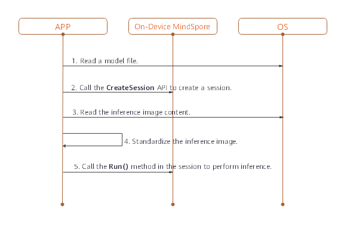

On-Device Inference
Overview
MindSpore Predict is a lightweight deep neural network inference engine that provides the inference function for models trained by MindSpore on the device side. This tutorial describes how to use and compile MindSpore Predict.
Compilation Method
You need to compile the MindSpore Predict by yourself. This section describes how to perform cross compilation in the Ubuntu environment.
The environment requirements are as follows:
Hardware requirements
Memory: 1 GB or above
Hard disk space: 10 GB or above
System requirements
System: Ubuntu = 16.04.02LTS (availability is checked)
Kernel: 4.4.0-62-generic (availability is checked)
Software dependencies
numpy, decorator and scipy can be installed through pip. The reference command is as following.
pip3 install numpy==1.16 decorator scipy
The compilation procedure is as follows:
Configure environment variables.
export LLVM_PATH={$LLVM_PATH}/clang+llvm-8.0.0-x86_64-linux-gnu-ubuntu-16.04/bin/llvm-config #Set the LLVM path. export ANDROID_NDK={$NDK_PATH}/android-ndk-r16b #Set the NDK path.
Download source code from the code repository.
git clone https://gitee.com/mindspore/mindspore.git -b r0.2
Run the following command in the root directory of the source code to compile MindSpore Predict: -I indicates options for compiling MindSpore Predict and the parameter is the target platform architecture. Currently, only the Android arm64 platform is supported.
sh build.sh -I arm64
Obtain the compilation result.
Go to the predict/output directory of the source code to view the generated package. The package name is MSPredict-{Version number}-{Host platform}_{Device platform}.tar.gz, for example, MSPredict-0.1.0-linux_aarch64.tar.gz. The package contains the following directories:
include: MindSpore Predict header file.
lib: MindSpore Predict dynamic library.
Use of On-Device Inference
When MindSpore is used to perform model inference in the APK project of an app, preprocessing input is required before model inference. For example, before an image is converted into the tensor format required by MindSpore inference, the image needs to be resized. After MindSpore completes model inference, postprocess the model inference result and sends the processed output to the app.
This section describes how to use MindSpore to perform model inference. The setup of an APK project and pre- and post-processing of model inference are not described here.
To perform on-device model inference using MindSpore, perform the following steps.
Generating an On-Device Model File
After training is complete, load the generated checkpoint file to the defined network.
param_dict = load_checkpoint(ckpoint_file_name=ckpt_file_path) load_param_into_net(net, param_dict)
Call the
exportAPI to export the .ms model file on the device.export(net, input_data, file_name="./lenet.ms", file_format='LITE')
Take the LeNet network as an example. The generated on-device model file is lenet.ms. The complete sample code lenet.py is as follows:
import os
import numpy as np
import mindspore.nn as nn
import mindspore.ops.operations as P
import mindspore.context as context
from mindspore.common.tensor import Tensor
from mindspore.train.serialization import export, load_checkpoint, load_param_into_net
class LeNet(nn.Cell):
def __init__(self):
super(LeNet, self).__init__()
self.relu = P.ReLU()
self.batch_size = 32
self.conv1 = nn.Conv2d(1, 6, kernel_size=5, stride=1, padding=0, has_bias=False, pad_mode='valid')
self.conv2 = nn.Conv2d(6, 16, kernel_size=5, stride=1, padding=0, has_bias=False, pad_mode='valid')
self.pool = nn.MaxPool2d(kernel_size=2, stride=2)
self.reshape = P.Reshape()
self.fc1 = nn.Dense(400, 120)
self.fc2 = nn.Dense(120, 84)
self.fc3 = nn.Dense(84, 10)
def construct(self, input_x):
output = self.conv1(input_x)
output = self.relu(output)
output = self.pool(output)
output = self.conv2(output)
output = self.relu(output)
output = self.pool(output)
output = self.reshape(output, (self.batch_size, -1))
output = self.fc1(output)
output = self.relu(output)
output = self.fc2(output)
output = self.relu(output)
output = self.fc3(output)
return output
if __name__ == '__main__':
context.set_context(mode=context.GRAPH_MODE, device_target="Ascend")
seed = 0
np.random.seed(seed)
origin_data = np.random.uniform(low=0, high=255, size=(32, 1, 32, 32)).astype(np.float32)
origin_data.tofile("lenet.bin")
input_data = Tensor(origin_data)
net = LeNet()
ckpt_file_path = "path_to/lenet.ckpt"
is_ckpt_exist = os.path.exists(ckpt_file_path)
if is_ckpt_exist:
param_dict = load_checkpoint(ckpoint_file_name=ckpt_file_path)
load_param_into_net(net, param_dict)
export(net, input_data, file_name="./lenet.ms", file_format='LITE')
print("export model success.")
else:
print("checkpoint file does not exist.")
Implementing On-Device Inference
Use the .ms model file and image data as input to create a session and implement inference on the device.

Figure 1 On-device inference sequence diagram
Load the .ms model file to the memory buffer. The ReadFile function needs to be implemented by users, according to the C++ tutorial.
// read model file std::string modelPath = "./models/lenet/lenet.ms"; size_t graphSize = 0; /* ReadFile() here is a dummy function */ char *graphBuf = ReadFile(modelPath.c_str(), graphSize);
Call the CreateSession API to create a session. After the session is created, the model file in the memory buffer can be released.
// create session Context ctx; std::shared_ptr<Session> session = CreateSession(graphBuf, graphSize, ctx); free(graphBuf);
Read the input data for inference from the memory buffer and call the SetData() API to set the input data to input tensor.
// load input buffer size_t inputSize = 0; std::string imagePath = "./data/input/lenet.bin"; char *inputBuf = ReadFile(imagePath.c_str(), inputSize); //get input tensors std::vector<Tensor *> inputs = session->GetInput(); //set input buffer inputs[0]->SetData(inputBuf);
Call the Run() API in the session to perform inference.
// session run int ret = session->Run(inputs);
Call the GetAllOutput() API to obtain the output.
// get output std::map<std::string, std::vector<Tensor *>> outputs = session->GetAllOutput();
Call the Getdata() API to get the output data.
// get output data float *data = nullptr; for (auto output : outputs) { auto tensors = output.second; for (auto tensor : tensors) { data = (float *)(tensor->GetData()); } }
Release input and output tensors after the inference is complete.
// free inputs and outputs for (auto &input : inputs) { delete input; } inputs.clear(); for (auto &output : outputs) { for (auto &outputTensor : output.second) { delete outputTensor; } } outputs.clear();
Select the LeNet network and set the inference input to lenet.bin. The complete sample code lenet.cpp is as follows:
MindSpore Predict uses FlatBuffers to define models. The FlatBuffers header file is required for parsing models. Therefore, you need to configure the FlatBuffers header file.
Method: Copy the flatbuffers folder in MindSpore root directory/third_party/flatbuffers/include to the directory at the same level as session.h.
#include <string>
#include <vector>
#include "context.h"
#include "session.h"
#include "tensor.h"
#include "errorcode.h"
using namespace mindspore::predict;
int main() {
std::string modelPath = "./models/lenet/lenet.ms";
std::string imagePath = "./data/input/lenet.bin";
// read model file
size_t graphSize = 0;
/* ReadFile() here is a dummy function */
char *graphBuf = ReadFile(modelPath.c_str(), graphSize);
if (graphBuf == nullptr) {
return -1;
}
// create session
Context ctx;
auto session = CreateSession(graphBuf, graphSize, ctx);
if (session == nullptr) {
free(graphBuf);
return -1;
}
free(graphBuf);
// load input buf
size_t inputSize = 0;
char *inputBuf = ReadFile(imagePath.c_str(), inputSize);
if (inputBuf == nullptr) {
return -1;
}
auto inputs = session->GetInput();
inputs[0]->SetData(inputBuf);
// session run
auto ret = session->Run(inputs);
if (ret != RET_OK) {
printf("run failed, error: %d\n", ret);
for (auto &input : inputs) {
delete input;
}
return -1;
}
// get output
auto outputs = session->GetAllOutput();
// get output data
float *data = nullptr;
for (auto output : outputs) {
auto tensors = output.second;
for (auto tensor : tensors) {
data = (float *)(tensor->GetData());
//print the contents of the data
for (size_t i = 0; i < tensor->GetElementSize(); ++i) {
printf(" %f ", data[i]);
}
printf("\n");
}
}
// free inputs and outputs
for (auto &input : inputs) {
delete input;
}
inputs.clear();
for (auto &output : outputs) {
for (auto &outputTensor : output.second) {
delete outputTensor;
}
}
outputs.clear();
return 0;
}